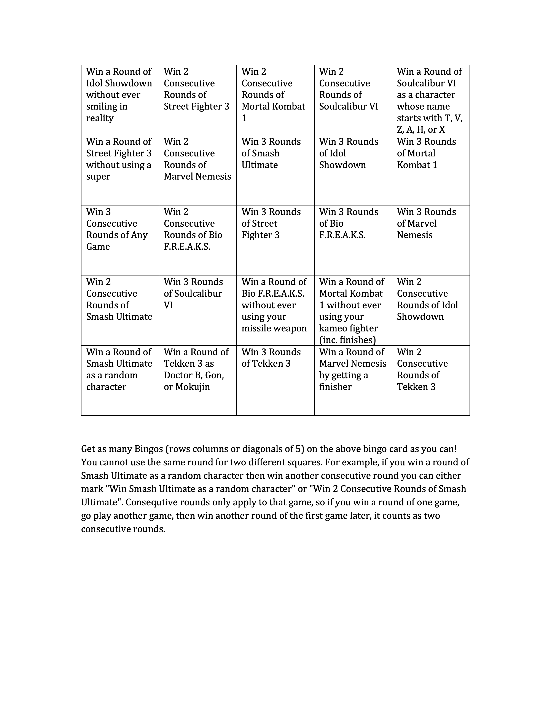

FIGHTING GAME
BINGO NIGHT
This was hosted as an in-dorm event at Benedictine University, located in Atchison KS.
Often after classes the men at the university would visit each others' dormitories to play Mortal Kombat 1, or Super Smash Brothers. In light of this one man hatched a rather crazy scheme — turn a dorm room into an arcade for a night.
Gathering together all his friends that were interested, they took stock of every machine and fighting game they had access to, chose 8, and came up with a scheme for linking them all together: a Bingo Card.
The card's 25 squares would represent rounds or win conditions in the various fighting games. By walking throughout the dorm and challenging other guests to rounds of the games they could fill out their cards. Player with the most bingos at the end of the night won.

The Games
Mortal Kombat 1
Released by NetherRealm Studios in 2023, at the time of the event this was the most recent entry in the long-running foundational Fighting series Mortal Kombat.
Players face off in brutal, intense personal combat. It's a traditional two-dimentional combo-based fighter, where most moves in a character's kit are unlocked via complicated input series. Players also pick a second fighter who is used in "Kameo Moves" to assist the player's primary fighter.
The challenge was: Win a Round of Mortal Kombat 1 without ever using your kameo fighter (inc. finishes)
Super Smash Brothers Ultimate
Nintendo's 2018 entry into their quintesential platform fighter series, Super Smash Brothers.
Players choose from a diverse array of characters, all guests from other videogames, mostly other Nintendo games. They then face off on two-dimensional floating platforms above a void. As players take damage the amount they are knocked back when hit increases, and a player dies when they go offscreen either by falling too far or taking enough damage and being knocked off screen.
The challenge was: Win a Round of Smash Ultimate as a random character.
Street Fighter III: 3rd Strike - Fight for the Future
Released by Capcom in 1999, 3rd Strike was, ironically, the 11th game in its series. It was the tamer, more kid-friendly cousin to Mortal Kombat, keeping the two-dimensional combo-based format but maintaining a more cartoonish and bloodless style. Don't mistake this for meaning the game is easier, however. Street Fighter is still as technical as they come.
The challenge was: Win a Round of Street Fighter 3 without using a super.
Sadly the machine running this was struggling and the game was almost unplayably laggy, but SFIII would return in future FGBNs.
Tekken 3
Tekken was Namco's take on a combo fighter, but it added an element of depth not present in most other fighters — literal depth. Tekken, from its inception, was a fully 3d fighting game. Players could not just jump and duck over and under attacks, they could now dodge and sidestep around their opponent.
Released in 1997 by Namco, Tekken 3 was, and still is, considered by many fans to be the best iteration of the series.
The challenge was: Win a Round of Tekken 3 as Doctor B, Gon, or Mokujin. These characters are all largely included as jokes, and hence have very odd movesets.
Soulcalibur VI
After the mass sucess of Tekken, Namco decided to captiolize on the sucess of fully 3d combat and released Soul Edge, the progenitor of the Soulcalibur series. Much like tekken, one could dodge and sidestep attacks, but jumping was much less effective. The biggest change? Everyone had medieval weapons. The characters were Katana wielding Samurai and greatsword wielding knights. Parrying (known as guard-impacting) was a central mechanic.
Soulcalibur VI was, both at the time of the event and the writing of this page, the most recent entry in the Soulcalibur series.
The challenge was: Win a Round of Soulcalibur VI as a character whose name starts with T, V, Z, A, H, or X. I'll be honest we ran out of ideas on this one.
Marvel Nemesis: Rise of the Imperfects
Marvel Nemesis: Rise of the Imperfects is a 3D fighting game developed by Nihilistic Software and published by Electronic Arts for the Nintendo GameCube in 2005. The game is based on the Marvel comic series of the same name, which introduced a group of original villains and antiheroes known as the Imperfects. Alongside these new characters, players can battle as iconic Marvel heroes across large destructible arenas filled with hazards and environmental weapons.
Unlike more traditional fighting games of its era, Marvel Nemesis focuses heavily on full range movement including flight, arena interaction, and cinematic attacks. Characters can throw cars, smash opponents through walls, and unleash powerful super moves using rage mechanics.
The challenge was: Win a Round of Marvel Nemesis by getting a finisher. It's a type of move similar to Mortal Kombat's Fatalities.
Bio F.R.E.A.K.S.
Bio F.R.E.A.K.S. is a futuristic 3D fighting game developed by Saffire and published by Midway Games for the PlayStation in 1998. Set in the dystopian world of Neo-Amerika, the game follows a cast of cybernetically enhanced warriors battling for dominance between powerful corporate factions. The title's acronym stands for “Biological Flying Robotic Enhanced Armored Killing Synthoids,” reflecting the game's extreme science fiction aesthetic and heavily mechanized fighters.
Bio F.R.E.A.K.S. became known for its unusual combat system, which emphasized aerial movement, projectile attacks, and brutal arena battles. Characters use jetpacks to move freely through large stages filled with hazards and interactive elements. Combat features graphic dismemberment mechanics and explosive finishing attacks.
The challenge was: Win a Round of Bio F.R.E.A.K.S. without ever using your missile weapon. This was quite difficult. Without the hitstun of projectiles, closing the distance between you and your opponent is quite difficult and requires creative use of flight mechanics.
Idol Showdown
Idol Showdown is a 2D fighting game developed by the fan studio Besto Game Team and released for PC in 2023. Inspired by competitive anime-style fighters, the game features a roster based on popular VTubers. Built with a strong focus on accessibility and fast-paced gameplay, Idol Showdown combines traditional fighting game mechanics with flashy super attacks, assist systems, and character-specific playstyles designed to appeal to both casual players and experienced fighting game fans.
The challenge was: Win a Round of Idol Showdown without smiling in reality. Although this is not difficult it was extremely funny watching a couple of grown men sitting stoicly playing a game about VTubers fighting while a bunch of high picthed anime-girl voiclines eminated from the machine.
The Winner
The event, unfortunatly for him, was won by the initial coordinator, James Bord. It was tied between him and the second place contestant, who made the mistake of picking Marvel Nemesis as a tiebreaker, which was Bord's best game at the event. The reason this was unfortunate was the trophy — a picture of Jar Jar Binks from Star Wars photoshopped to have the physique of a bodybuilder. Bord had hoped to pawn this off on one of his friends but it remains in his posession.